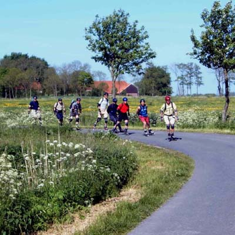
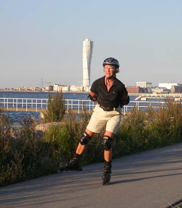

Skånes Isseglarklubb - SIK
Skånes Isseglarklubb - SIK | |
| Isinformation | Skridskosegling | Långfärdsskridsko | Inline | Sommaraktiviteter | Om SIK | Vanliga frågor | Kontakt | |
| SIK:s INLINEVERKSAMHET |
|
Vi började med inline 1996. Efter en fantastisk skridskosäsong som slutade på Ringsjön först den 8 april ville många fortsätta att träffas även under "den stora mörka vakens tid". Vi testade bl.a. att hyra inline och flera medlemmar tände direkt på denna lustfyllda sport som då främst utövades av ungdomar. Sedan dess har verksamheten vuxit och vi är många som tycker att inlineåkning är väl så trevligt som långfärdsskridskor. Åkningen innehåller mycket av det som långfärdsskridkoåkningen ger nämligen:
Precis som med is är det givande att utforska nya åkområden och dess förutsättningar. Asfalt är nämligen en hel vetenskap och åkförutsättningarn varierar starkt. Delar av Skånes inlinegäng som nu är uppe i ett 60-tal personer träffas praktiskt taget varje torsdagskväll under sommarhalvåret för olika 2-4 milaturer i hela sydvästra Skåne. Vissa gånger gör vi heldagsturer på lite större avstånd inte minst i Danmark. Vi har även åkt inline i Schweiz, Friesland och i Paris. Kallese till turerna sker av någon av våra ledare Kaj Persson, Olle Holmberg eller Lars R Carlstedt via e-postlistan "Sik-Alla" som du själv ”prenumererar” på. Läs om gjorda turerVåra organiserade och även många privata turer dokumenteras i färdrapporter. Här finns färdrapporter från hela Skåne och stora delar av övriga Sverige så om du vill ha tips på lämpliga turer så markera ”Fritextsökning” nederst på öppningssidan och skriv in den ort som du vill passera. Då kommer alla färdrapporter som omnämner den orten fram. Våra färdrapporter har lockat ut många SIK:are och även flera åkare norrifrån för färder i Skåne som är ett veritabelt inline-eldorado. ÅkningenInlineåkning påminner mycket om långfärdskridskor. Många är rädda för att bromsa men det lär du dig snabbt. Träna på lugna, platta ytor med bra asfalt. Åk med böjda knän och med låg tyngdpunkt. Välj i första hand cykelbanor. På våra turer åker vi även på lågtrafikerade landsvägar och då på höger sida i trafikens riktning. Asfaltytan bedöms efter en femgradig skala där fem är bäst. Läs mer om åkytegradering och mycket annat. KartorGröna kartan som har skalan 1:50 000 är bra att åka efter. Både Malmö och Lund har speciella cykelkartor som du får gratis genom kommunen eller turisbyråer. Vissa färdrapporter har GPS-spår inlagda som du kan följa.  UtrustningSkydd i form av hjälm, handleds-, armbågs och knäskydd är ett måste! Ta alltid med dig en liten ryggsäck där du har rikligt med vätska, skor, extra tröja mm. När det gäller själva inlinen finns det mycket att välja på både bra och dåligt. Det är viktigt att skorna sitter skönt. Inte för trångt - tänk på att fötterna sväller när du åkt en stund. Det kan vara en fördel att köpa ett välkänt märke såsom Salomon eller K2 då det blir lättare att få tag i reservdelar till dessa. Väljer man en billig modell är skor och chassin av så låg kvalitet att det inte lönar sig att gradera upp t ex hjul och kullager. Satsa minst 1500-2000 kr på ett par nya inlines om du skall använda dem för att åka längre än ett par kilometer åt gången. Vi rekommenderar stora hjul därför att dessa går mjukare över ojämnheter. Välj minst 80 mm i diameter. Ju större hjul desto snabbare rullar du. Idag talar man t.o.m. om 100 mm. Mest lämpade för långturer är femhjuliga inlines eller fyrhjulingar med 90-100 mm hjul. Dessa ger pga lång hjulbas och styv chassikonstruktion bra stabilitet framåt/bakåt och i höga farter. Den långa hjulbasen sväljer också ojämnheter i underlaget relativt bra. Hjulens "däck" är tillverkade av polyuretan. Denna finns i olika hårdhet. 78A-85A är vanliga hårdheter där 78A är relativt mjuka 85A relativt hårda. Hårda hjul rullar snabbare på bra underlag men mjukare hjul dämpar ojämnheter bättre och ger bättre fäste speciellt på fuktigt underlag. Tyngre åkare behöver hårdare hjul än lättare. Kullagren skall vara ABEC 3-7 och ej komma från Ostasien. Hjulram av lättmetall är starkare än de av plast. Ramen skall ha en styvhet på DR 100-200. Ju styvare desto mer kraft överförs från benen till marken. Läs dom senaste turerna.GOD TUR OCH RULLA LUNGT! |